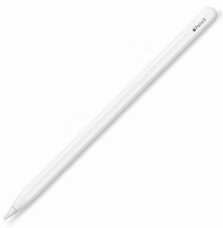

02wk-1: 수학과의 표현, 귀류법과 일반화
강의영상
수학과의 표현: (1) 기호
- 아래와 같은 기호들의 의미를 알고 있는가?
- \(\because\)
- \(\therefore\)
- 이처럼 수학에서는 특별한 의미를 가지는 몇 가지 기호가 있다.
- 아래는 특별한 의미를 가지는 수학기호들의 모음이다.
| 언어 | 기호 |
|---|---|
| for all | ∀ |
| exists | ∃ |
| such that, satisfying | s.t., st |
| if-then, implies | ⇒ |
| if and only if | ⇔ |
| quod erat | □, ■ |
# 예시1: 아래의 문장
“모든 실수 \(x\)에 대하여, \(x^2\)은 양수이다.”
을 다양하게 표현하여 보자.
(언어)
- for any \(x\) in \(\mathbb{R}\), \(x^2 \geq 0\).
- for arbitrary \(x \in \mathbb{R}\), \(x^2 \geq 0\).
- if \(x \in \mathbb{R}\), then \(x^2 \geq 0\).
(기호)
- \(\forall x \in \mathbb{R}\): \(x^2\geq 0\).
- \(\forall x \in \mathbb{R}\), \(x^2\geq 0\).
- \(x^2 \geq 0\), for all \(x \in \mathbb{R}\).
- \(x^2 \geq 0\), \(\forall x \in \mathbb{R}\).
- \(x \in \mathbb{R} \Rightarrow x^2 \geq 0\).
어떻게 쓰느냐에 대한 규칙은 없음. 거의 쓰는 사람 마음임. (그런데 뉘앙스는 조금씩 다름)
#
# 예시2: 이번에는
“\(\Omega\)의 임의의 부분집합 \(A\),\(B\)에 대하여, \(A=B\) 일 필요충분조건은 \(A\subset B\) 이고 \(B \subset A\) 이어야 한다.”
라는 문장을 다양하게 표현하여 보자.
(언어)
- For all \(A,B \subset \Omega\), \(A=B\) if and only if (1) \(A \subset B\) and (2) \(B \subset A\).
- Consideer \(A,B \subset \Omega\). \(A=B\) if and only if (1) \(A \subset B\) and (2) \(B \subset A\).
(기호)
- \(A = B \Leftrightarrow A \subset B \text{ and } B \subset A, \forall A,B \in \Omega\).
- \(A = B \Leftrightarrow \big(A \subset B \text{ and } B \subset A\big), \forall A,B \in \Omega\).
- \(\forall A,B \subset \Omega\): \(A = B \Leftrightarrow \big(A \subset B \text{ and } B \subset A\big)\)
의미가 좀 모호해질수도 있는데, “눈치껏” 알아 먹어야 한다.
#
# 예시3: 이번에는
“임의의 양수 \(\epsilon>0\) 에 대하여 \(|x| \leq \epsilon\) 이라면 \(x=0\) 일 수 밖에 없다.”
라는 문장을 표현해보자.
(언어)
- If \(|x|< \epsilon\) for all \(\epsilon>0\), then \(x=0\).
- If \(|x|< \epsilon\), \(\forall \epsilon>0\), then \(x=0\).
- For all \(\epsilon>0\), \(|x|< \epsilon\) implies \(x=0\). – 틀린표현
(기호)
- \(|x| < \epsilon,~ \forall \epsilon>0 \Rightarrow x=0\)
- \(\forall \epsilon>0: |x| < \epsilon \Rightarrow x=0\) – 애매하다?
- \(\big(\forall \epsilon>0:|x| < \epsilon\big) \Rightarrow x=0\)
- \(\big(\forall \epsilon>0\big)\big(|x| < \epsilon \Rightarrow x=0\big)\) – 틀린표현
수학과의 표현: (2) 약어
- 약어
- \({\sf WLOG}\): Without Loss Of Generality
- \({\sf WTS}\): What/Want To Show
- \({\sf iff}\): if and only if
- \({\sf Q.E.D.}\): 증명완료 (쓰지마..)
- \({\sf LHS}\): Left Hand Side
- \({\sf RHS}\): Right Hand Side
수학과의 표현: (3) 수의 집합
- 수학과에서는 수의 집합에 대한 약속된 기호가 있다.
- 실수전체의 집합을 \(\mathbb{R}\)로 표현한다.
- 자연수전체의 집합을 \(\mathbb{N}\)으로 표현한다.
- 정수전체의 집합을 \(\mathbb{Z}\)로 표현한다.
- 유리서전체의 집합을 \(\mathbb{Q}\)로 표현한다.
\(\infty\)는 수가 아니다.
- \(\{-\infty,\infty\} \not\subset \mathbb{R}\)
- \(\infty \notin \mathbb{N}\)
아무리봐도 숫자라고 생각한다면 아래의 예시를 보라.
# 예시 – 아래 문장의 참 거짓을 판별하라.
\(\forall n \in \mathbb{N}\): \(0 < \frac{1}{n} \leq 1\)
(답변)
참이다. (하지만 \(\infty \in \mathbb{N}\) 을 가정한다면 이것이 참이라고 주장하기 애매하겠지)
#
- \(\infty\)는 숫자가 아니지만 편의상 \(\infty\)를 수처럼 생각하여 아래와 같은 집합기호로 표현하기도 한다.
\[\bar{\mathbb{R}}:=\mathbb{R} \cup \{-\infty,\infty\}\]
여기에서 “\(:=\)”는 “정의한다” 라는 의미를 가진다.
귀류법
- 귀류법: 니 논리 대로면… <- 인터넷 댓글에 많음..
님 논리대로면.. (ref: 하이브레인넷)
- XXX가 문제 없으면 서울 전체가 문제가 없고 (애초에 서울은 문제도 아니라는데 왜 이소리는 하고 계신지 모르겠지만)
- 수도권 모 대학이 문제가 없으면 전체가 문제가 없겠네요?
- 지방도 1개 대학이 문제가 없으니 전체가 문제 없겠네요? 와우! 모든 문제가 해결되었습니다! 출산율 감소로 인한 한국대학의 위기가 해결되었.. 아니 애초에 위기가 없었군요!. 어휴.. ㅠㅠ
- 섀도복싱
- 상대가 없는 허공에 대고 샌드백 없이 권투 연습을 하는 것. https://www.youtube.com/embed/dvzTKtMHsJw
- 인터넷 상에서는 혼자서 허공에 대고 공격한다는 의미로 사용되고 있음. 어휘의 원래 뜻과 마찬가지로 아무도 뭐라 하지 않았는데 혼자 가상의 공격 상대를 만들어 놓고 비판하거나 욕하는 모습을 표현할 때 많이 쓰임. (출처: 나무위키)
기습질문 (지난시간의 난제) 바늘이 하나있는 시계에서, 바늘을 랜덤으로 돌려서 딱 6시에 멈출 확률이 0이어야 하는 이유?
(풀이)
추상화(일반화)
- 연필이란? 필기도구의 하나. 흑연과 점토의 혼합물을 구워 만든 가느다란 심을 속에 넣고, 겉은 나무로 둘러싸서 만든다. 1565년에 영국에서 처음으로 만들었다. (출처: 네이버국어사전)
질문: 아래는 연필인가?

- 새로운 개념을 적용해야하는 어떠한 일이 있을때, 사람들은 익숙한 정의에서 확장을 하기를 원한다. 확장을 하는 방식은 익숙한 정의에 의해 파생되는 성질을 이용하여 (혹은 성질들을 조합하여), “마치 정의처럼” 쓰는 것이다.
- 수학에서는 약속에 의하여 성질이 생기고, 그 성질로부터 확장된 약속이 생기는 것은 매우 흔한일이다.